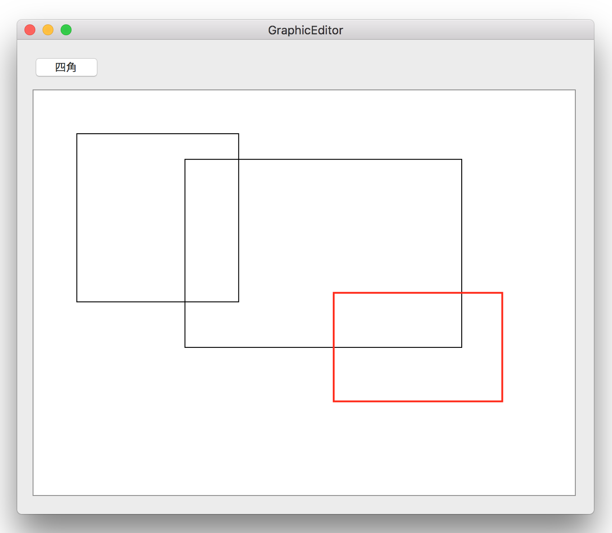

<!-- 
NewPractice_Swift/04 GraphicEditor
-->
<DOCTYPE HTML>
<html id="mainhtml">
<head>
  <meta http-equiv="Content-Type" content="text/html; charset=utf-8">
  <title>Core Graphicsを使用した簡単な図形描画ツール</title>
  <link rel="stylesheet" type="text/css" href="/lib/document.css">
</head>
<body id="mainbody">
<!-- ↓↓↓↓↓↓↓↓↓↓↓ -->
<script type='text/javascript' src='/lib/funcs2.js'></script>
<!-- ↑↑↑↑↑↑↑↑↑↑ -->
<div id="content">
<h2 class="lm70 tm20 bm10">
Core Graphicsを使用した簡単な図形描画ツール
</h2>
<!-- 画像 -->
<a href="/lib/HTMLofVideo.html?filename=/data/B19/movie.mp4&title=movie&width=500" target="_new">
</a>

<div class="lm120 tm5 rm60">
画像をクリックすると動画が表示されます。
</div>

<div class="lm100 tm30 rm60">
Objective-Cで作成した<a  href='/data/76/graphic_editor2.html' target="_blank">同機能</a>をSwiftでリライトしてみた。削除機能は未実装。
</div>
<div class="lm100 tm10 bm0 rm60">
ちょっと変わった点
</div>
<div class="lm100 tm5 rm60">
CoreGraphics関数の使い方が変わった。オブジェクト指向的になった。
</div>
<!--ソースコード-->
<iframe class="lm100 tm5" src="/lib/HTMLofText.html?filename=/data/B19/cgcontext.txt&font=font100" width="550" height="150"></iframe>
<div class="lm100 tm10 rm60">
CGRectの定義
</div>
<!--ソースコード-->
<iframe class="lm100 tm5" src="/lib/HTMLofText.html?filename=/data/B19/cgrect.txt&font=font100" width="550" height="40"></iframe>
<div class="lm100 tm10 rm60">
NSButtonのstateの判定方法が変わった
</div>
<!--ソースコード-->
<iframe class="lm100 tm5" src="/lib/HTMLofText.html?filename=/data/B19/state.txt&font=font100" width="550" height="80"></iframe>
<h3 class="lm70 tm20 bm0 rm60">
ソースコード
</h3>
<!--ソースコードリンク-->
<div class="lm100 tm0 rm60">
<a href="/lib/HTMLofText.html?filename=/data/B19/source/UAView.txt&title=UAView" target="_new">UAView</a>
</div>
<div class="lm100 tm0 rm60">
<a href="/lib/HTMLofText.html?filename=/data/B19/source/UAShapeManager.txt&title=UAShapeManager" target="_new">UAShapeManager</a>
</div>
<div class="lm100 tm0 rm60">
<a href="/lib/HTMLofText.html?filename=/data/B19/source/UAShapeItem.txt&title=UAShapeItem" target="_new">UAShapeItem</a>
</div>
<div class="bp40"></div><!-- 空白行 -->
<!----------------------------------------------->
</div><!-- end of content -->
<footer id="mainfooter">
<div class="tp10 bm10 bp10 textright"> <span class="rm500 font80"><a href="/lib/index2.html">メニューに戻る</a></span><span class="rm20 font80"><a href="#mainheader">TOPに戻る</a></span></div>
</footer>
<script type="text/javascript" src="/lib/access/access2.js"></script>
</body>
</html>


